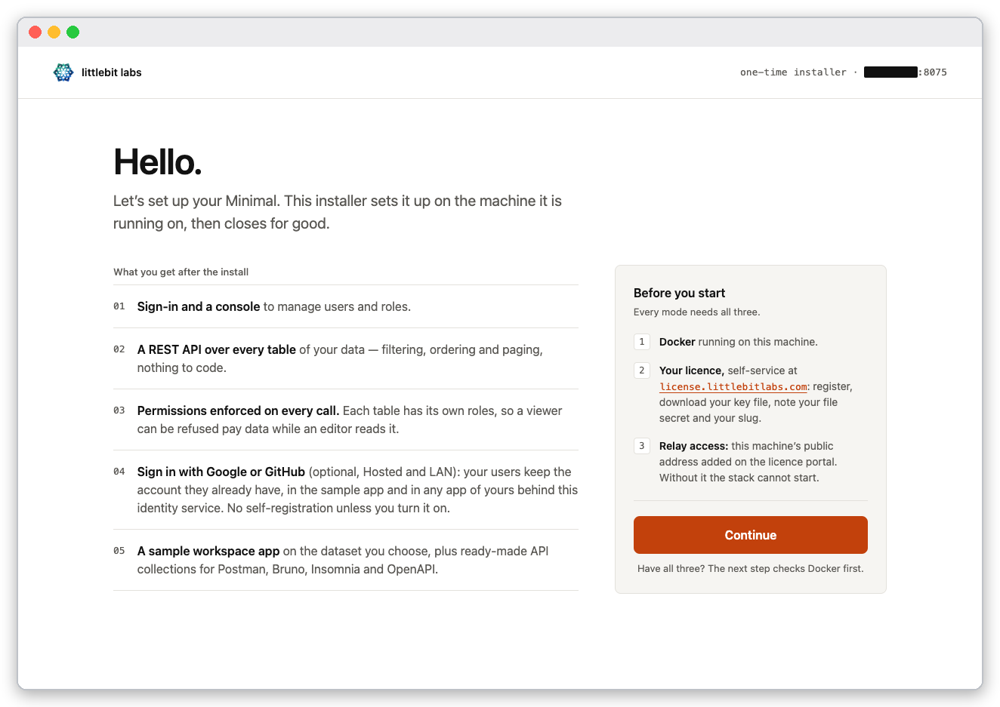
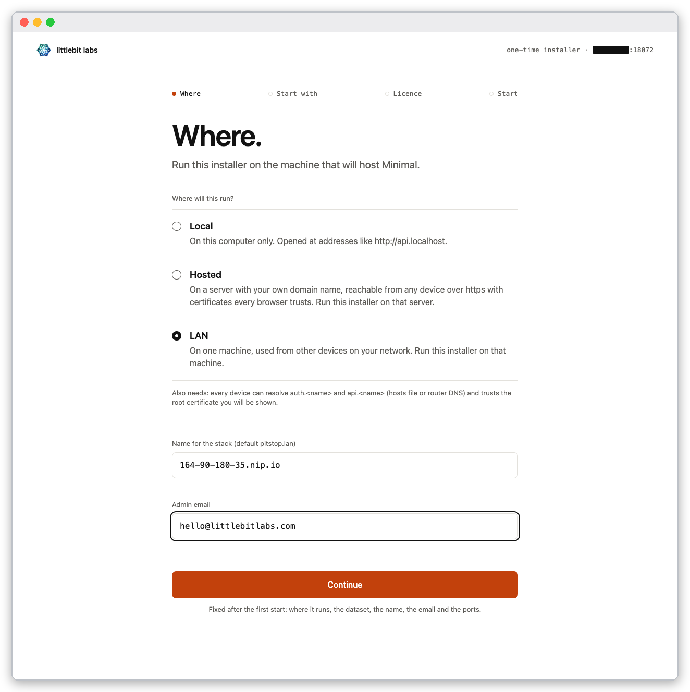
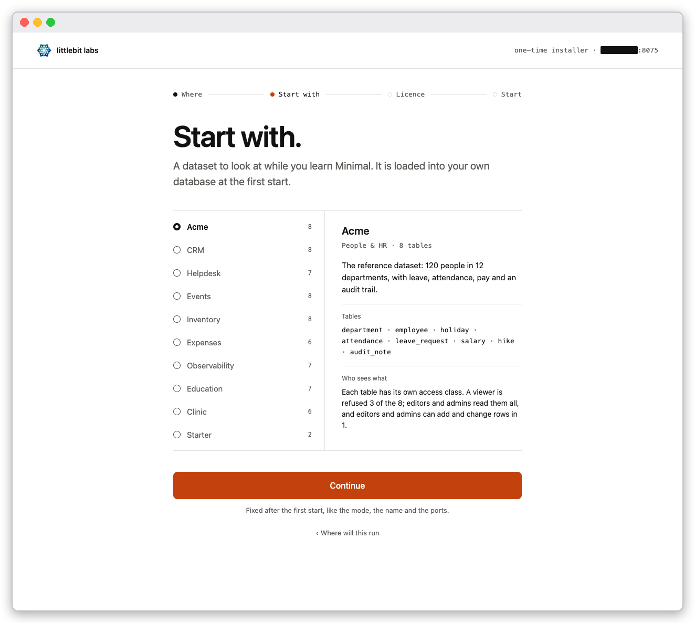
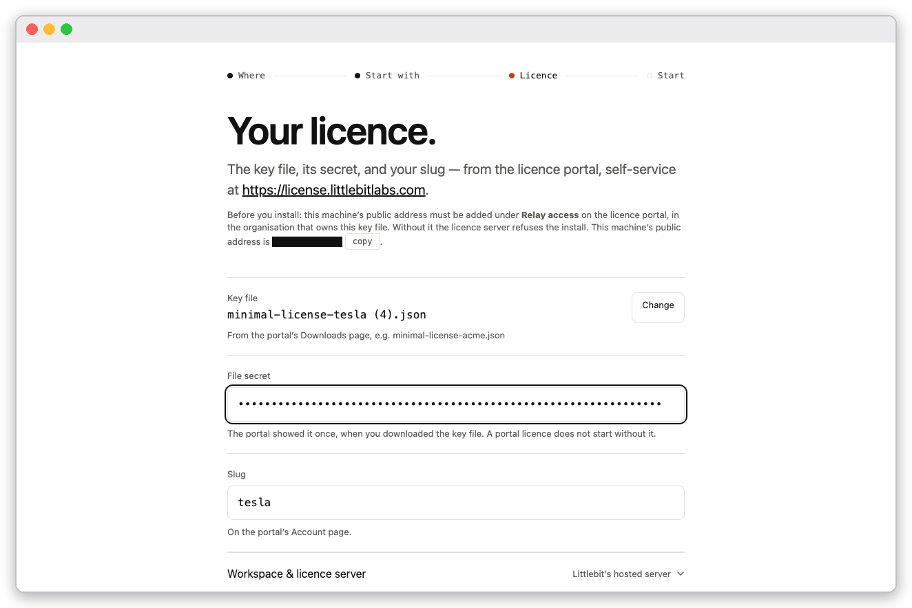
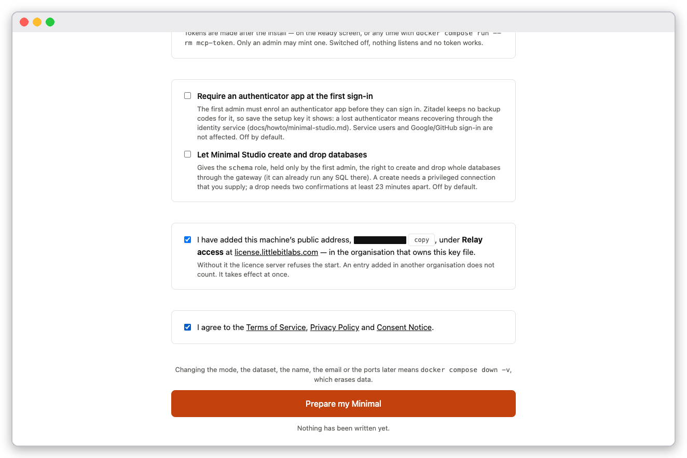
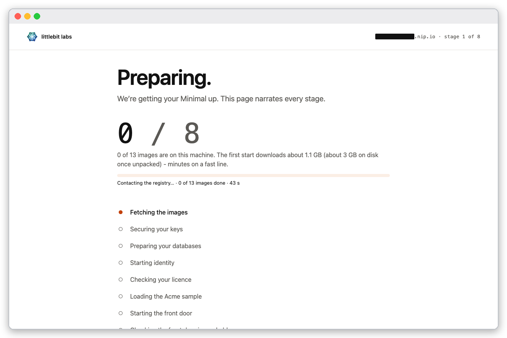
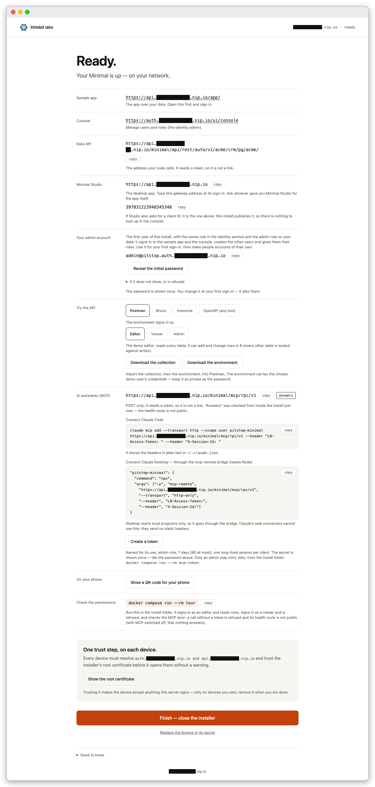
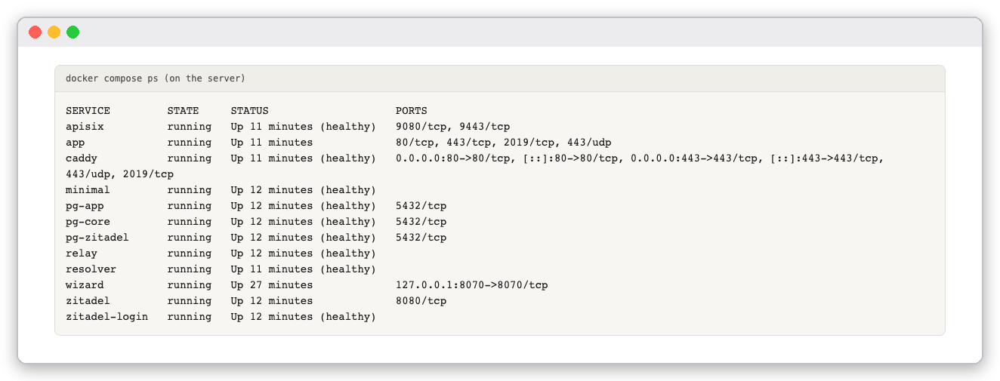
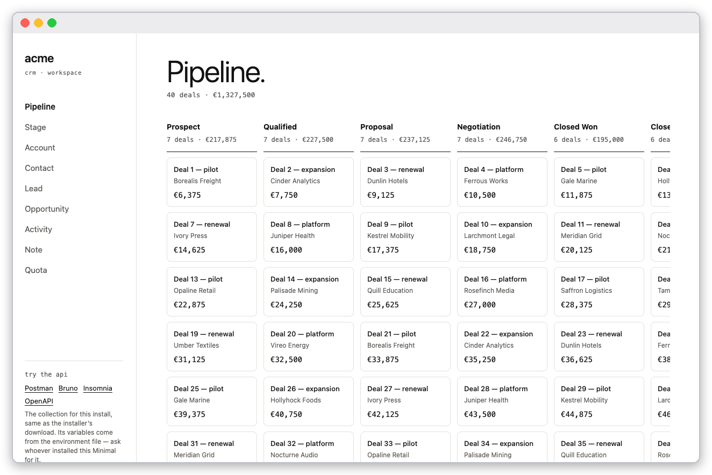

Goal: one machine runs Minimal, and other devices on your network use it over HTTPS with a certificate the stack signs itself. You trust that certificate once on each device.
Use this mode when the machine is not on the internet. For a public server with a real domain, use Put Minimal on the internet.
The screenshots were taken on a server on a private network, with its address masked. In the text the address is written xx.yy.zz.aa; use your machine's.
nip.io: for xx.yy.zz.aa use xx-yy-zz-aa.nip.io. The stack then answers on auth.xx-yy-zz-aa.nip.io and api.xx-yy-zz-aa.nip.io.ssh -L 8070:localhost:8070 you@xx.yy.zz.aa
On the server, make the folder, fetch the compose file and start the installer, exactly as in the local tutorial, then open the one-time address in your laptop's browser. The first page is Hello.; press Continue.

The installer's first page.
On Where will this run? choose LAN. Type the name as Name for the stack and a real Admin email.

The LAN choice. The name is masked.
Choose a dataset on Start with. and press Continue (the screen is the same in every mode; the local tutorial describes the ten datasets).

The dataset list with its description panel.
On Your licence. choose the key file and enter the secret and the slug.

The licence screen; the machine's public address is masked.
On the review screen tick Relay access and the agreement, then press Prepare my Minimal.

Both boxes ticked.
Wait for Ready. The page narrates the same eight stages as in the local tutorial.

The installer working through the stages.

The Ready screen ends with One trust step, on each device, a Show the root certificate button and the AI assistants (MCP) address.
Check the containers on the server:
docker compose ps

The stack running on the server.
A device that has not trusted the stack's root certificate refuses the connection. From a device, without the root:
curl -sS https://api.xx-yy-zz-aa.nip.io/app/
curl: (60) SSL certificate problem: unable to get local issuer certificate
Get the root, check it, trust it.
Fetch it on the server, which also prints its SHA-256 fingerprint:
docker compose run --rm -T ca-cert > pitstop-root.crt
SHA-256 fingerprint (compare on the device): F0:D9:1A:2B:…
Or fetch it from the device itself at http://auth.xx-yy-zz-aa.nip.io/pitstop-root.crt. Both routes give the same certificate.
On the device, compare the fingerprint with the one printed on the server:
openssl x509 -in pitstop-root.crt -noout -fingerprint -sha256
Trust it. On Debian or Ubuntu:
sudo cp pitstop-root.crt /usr/local/share/ca-certificates/ && sudo update-ca-certificates
On macOS, open Keychain Access, import into System, and set Always Trust. Windows, Firefox, iOS and Android have their own certificate stores; each takes the same file.
Check:
curl -sS --cacert pitstop-root.crt -o /dev/null -w '%{http_code}\n' https://api.xx-yy-zz-aa.nip.io/app/
200
Trusting the root makes the device accept anything this server signs. Do it only on devices you own, and remove it when you are done.
Sign in exactly as in the local tutorial, with the console at https://auth.xx-yy-zz-aa.nip.io/ui/console and the login name admin@pitstop.auth.xx-yy-zz-aa.nip.io.

The sample app signed in, served over the stack's own HTTPS.
The login-name page on the LAN name.
docker compose ps shows caddy, minimal, resolver and relay as running (healthy).curl without the root fails with (60); with --cacert it prints 200.ca-cert equals the one openssl prints on the device.docker compose down -v stops the stack and erases its data. The mode, name and email are fixed at the first start, so changing them means this reset.